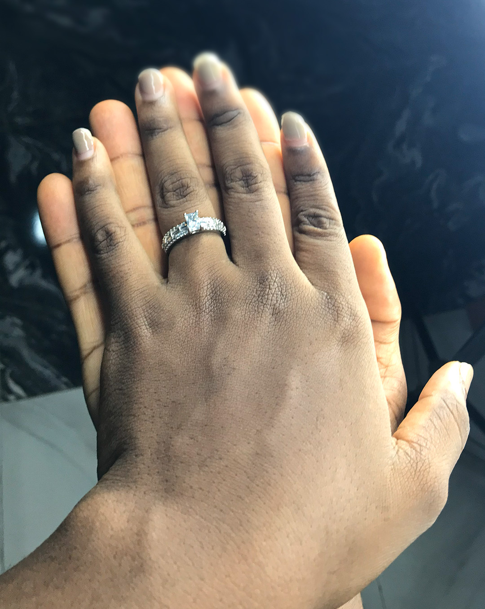
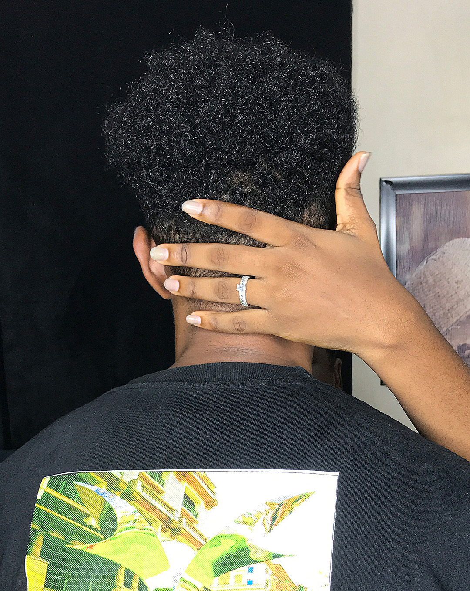

We attended the same church, but somehow never really crossed paths, just two people existing in the same space, completely unaware of what was ahead. That all changed when he, a music producer, reached out because he needed a vocal backround voice for a song he was working on. I teamed up with two of my friends, and together we helped bring his song to life.
The funny part? That first recording day felt like we had already known each other for years. The vibe was easy, the laughs were natural, and everything just flowed effortlessly. What I first noticed about him was how level-headed he was calm, focused, and collected… while the rest of us were just trying to hit the right notes and not laugh too much. After the session, we kept talking, the conversations got longer, and somewhere along the way, friendship turned into something more.

(He’ll probably tell you he caught feelings first and honestly, he’s not wrong.)
From one song to a lifetime together, our story is a reminder that sometimes the most unexpected moments can lead to something truly beautiful. And now, here we are… getting ready to spend forever together.

Click the video below to listen to the song we sang.